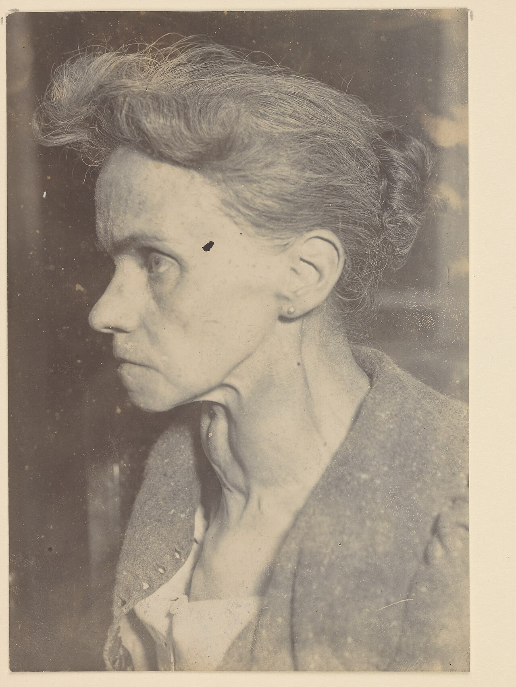

激素调节的过程（下）：分级调节与反馈调节
本期导读
激素调节的过程（下）

视频原话 · 导读3 句
- 同学们好！这节课梳理人教版选择性必修一第三章第二节的后半部分——分级调节与反馈调节。9.4s
- 以甲状腺激素为例，高考常考分级调节和负反馈、缺碘与甲状腺肿，以及切除腺体后的激素变化。9.9s
- 我们按八个考点梳理，每个考点都讲清楚怎么考、怎么做。5.5s
甲状腺调节轴01#
TRH：促甲状腺激素释放激素（下丘脑）
TSH：促甲状腺激素（垂体）
甲状腺激素：作用于几乎全身细胞
· 提高细胞代谢速率，增加产热
· 提高神经系统的兴奋性
· 促进生长发育
· 提高细胞代谢速率，增加产热
· 提高神经系统的兴奋性
· 促进生长发育
易错
TRH → 垂体；TSH → 甲状腺；甲状腺激素 → 几乎全身细胞
视频原话5 句
- 考点一，下丘脑—垂体—甲状腺轴。寒冷或紧张时，{下丘脑|brown}分泌促甲状腺激素释放激素，简称TRH。11.4s
- TRH作用于垂体，促使垂体分泌促甲状腺激素，简称TSH。7.2s
- TSH作用于甲状腺，促使甲状腺分泌甲状腺激素。5.8s
- 甲状腺激素几乎作用于全身细胞，能提高细胞代谢速率，使机体产热增加；还能提高神经系统的兴奋性，促进生长发育。11.5s
- 易错：TRH的靶器官是垂体，TSH的靶器官是甲状腺，而甲状腺激素的靶细胞几乎是全身细胞。10.1s
分级调节及其意义02#
下丘脑 → 垂体 → 靶腺体的分层调控 = 分级调节
TRH（少量）
TSH
甲状腺激素（大量）
层层放大 ↑
考法
意义：放大激素的调节效应，形成多级反馈调节，有利于精细调控，维持稳态
视频原话3 句
- 考点二，分级调节。人们把下丘脑、垂体和靶腺体之间存在的分层调控，称为分级调节。9.3s
- 分级调节能够放大激素的调节效应：少量的TRH，经过垂体、甲状腺层层放大，产生大量的甲状腺激素。10.6s
- 考法：问分级调节的意义，答“放大激素的调节效应，形成多级反馈调节，有利于精细调控，从而维持机体的稳态”。10.9s
负反馈调节03#
甲状腺激素增加到一定程度 → 抑制下丘脑和垂体
TRH、TSH ↓ → 甲状腺激素 ↓ → 回到正常水平
易错
反馈作用于下丘脑和垂体两处，有两条反馈箭头
视频原话3 句
- 考点三，负反馈调节。当血液中的甲状腺激素含量增加到一定程度时，又会抑制下丘脑和垂体分泌TRH和TSH。12.0s
- 于是TSH减少，甲状腺激素的分泌也随之减少，含量回到正常水平。7.5s
- 易错：甲状腺激素的负反馈同时作用于下丘脑和垂体两处，画图时有两条反馈箭头，不要漏画。9.9s
缺碘导致甲状腺肿04#
碘是合成甲状腺激素的原料
缺碘 → 甲状腺激素↓ → 反馈抑制减弱
TRH、TSH ↑ → 甲状腺增生肿大
解题方法
沿反馈链推：甲状腺激素↓ → 抑制减弱 → TRH、TSH↑ → 甲状腺增生肿大
视频原话4 句
- 考点四，缺碘为什么会导致甲状腺肿？因为碘是合成甲状腺激素的原料。7.4s
- 缺碘时，甲状腺激素合成减少，对下丘脑和垂体的抑制作用减弱。6.7s
- 于是TRH和TSH分泌增加，TSH持续促进甲状腺增生，甲状腺就肿大了。照片中这位病人颈部的隆起，就是甲状腺肿。13.5s
- 解题方法：沿着反馈链一步步推：甲状腺激素减少，抑制减弱，TRH、TSH增加，甲状腺增生肿大。10.8s
其他调节轴05#
| 调节轴 | 下丘脑 | 垂体 | 靶腺体 | 靶腺激素 |
|---|---|---|---|---|
| 甲状腺轴 | TRH | TSH | 甲状腺 | 甲状腺激素 |
| 肾上腺皮质轴 | CRH | ACTH | 肾上腺皮质 | 糖皮质激素 |
| 性腺轴 | GnRH | 促性腺激素 | 性腺 | 性激素 |
考法
每条轴都遵循：分级调节 + 负反馈调节。会分析一条，就会分析所有
视频原话3 句
- 考点五，其他调节轴。除了甲状腺轴，还有下丘脑—垂体—肾上腺皮质轴，调节糖皮质激素的分泌；10.4s
- 以及下丘脑—垂体—性腺轴，调节性激素的分泌。5.4s
- 考法：这几条轴遵循同样的规律：分级调节加负反馈调节。会分析一条轴，就会分析所有的轴。10.0s
切除、注射后的变化06#
| 处理 | TRH | TSH | 甲状腺激素 |
|---|---|---|---|
| 切除甲状腺 | ↑ | ↑ | ↓ |
| 注射甲状腺激素 | ↓ | ↓ | ↑ |
| 切除垂体 | ↑ | ↓ | ↓ |
解题方法
先找直接改变的激素 → 顺着分级调节往下推，逆着负反馈往上推
视频原话5 句
- 考点六，切除某个腺体或注射某种激素后，各激素含量怎样变化？6.6s
- 切除甲状腺：甲状腺激素减少，对下丘脑和垂体的抑制减弱，TRH和TSH都增加。9.1s
- 注射甲状腺激素：甲状腺激素增加，反馈抑制增强，TRH和TSH都减少。8.3s
- 切除垂体：TSH减少，甲状腺激素也减少，而TRH因为失去反馈抑制而增加。9.1s
- 解题方法：先找直接改变的那个激素，再顺着分级调节往下推，逆着负反馈往上推。8.2s
激素调节的特点07#
（回顾：激素与内分泌系统一期）
1. 通过体液运输
随血液流到全身
2. 作用于靶器官、靶细胞
只有它们有相应的受体
3. 作为信使传递信息
不组成细胞结构、不供能、不起催化作用
4. 微量和高效
含量极少，作用显著
易错
激素起作用后就失活 → 体内需源源不断地产生激素，维持含量的动态平衡
视频原话4 句
- 考点七，激素调节的特点。在激素与内分泌系统那一期讲过，这里简要回顾。7.9s
- 一是通过体液进行运输；二是作用于靶器官、靶细胞，因为只有它们有相应的受体；8.1s
- 三是作为信使传递信息；四是微量和高效。4.7s
- 易错：激素一经靶细胞接受并起作用后就失活了，所以体内需要源源不断地产生激素，以维持激素含量的动态平衡。11.1s
判断病变部位08#
甲状腺激素偏低的病人，病变在哪里？
| TRH | TSH | 甲状腺激素 | 病变部位 |
|---|---|---|---|
| 偏高 | 偏高 | 偏低 | 甲状腺 |
| 偏高 | 偏低 | 偏低 | 垂体 |
| 偏低 | 偏低 | 偏低 | 下丘脑 |
注射TRH后测TSH：
- TSH升高
- →下丘脑病变
- TSH不升高
- →垂体病变
解题方法
找偏低的最上面一级激素：它的上一级偏高（或它就是TRH）→ 病变在分泌它的那一级
试一试：看三级激素的高低，找出病变的那一级。
- 1TRH 偏高、TSH 偏高、甲状腺激素偏低甲状腺：上级激素都偏高而甲状腺激素偏低，说明甲状腺本身病变，负反馈减弱。
- 2TRH 偏高、TSH 偏低、甲状腺激素偏低垂体：TRH 高而 TSH 低，说明垂体不能正常分泌 TSH。
- 3TRH 偏低、TSH 偏低、甲状腺激素偏低下丘脑：最上一级 TRH 就偏低，病变在下丘脑。
视频原话5 句
- 考点八，例题：甲状腺激素偏低的病人，怎样判断病变在下丘脑、垂体还是甲状腺？8.8s
- 如果TSH偏高，说明垂体在拼命“催”甲状腺，病变在甲状腺。6.7s
- 如果TSH偏低，而TRH偏高，病变在垂体；如果TSH和TRH都偏低，病变在{下丘脑|brown}。10.7s
- 还可以注射TRH来判断：注射后TSH明显升高，说明垂体正常，病变在{下丘脑|brown}；TSH不升高，病变在垂体。12.0s
- 解题方法：找到含量偏低的最上面一级激素，如果它的上一级激素偏高，或者它本身就是TRH，病变就在分泌它的那一级。11.5s
易错速查✓
先自己判断，再点按钮查看对错与解析。
- 1TRH直接作用于甲状腺说法错误：TRH作用于垂体
- 2分级调节可以放大激素的调节效应说法正确。
- 3甲状腺激素只反馈抑制垂体说法错误：同时抑制下丘脑和垂体
- 4缺碘时TSH分泌增加，导致甲状腺肿大说法正确。
- 5切除垂体后，TRH含量减少说法错误：失去反馈抑制，TRH增加
- 6激素一经靶细胞接受并起作用后就失活说法正确。
顺着分级推下去，逆着反馈推上来！
视频原话 · 易错速查5 句
- 最后，用六道判断题检验一下。3.6s
- TRH直接作用于甲状腺？错，作用于垂体。分级调节可以放大激素的调节效应？对。9.9s
- 甲状腺激素只反馈抑制垂体？错，同时抑制下丘脑和垂体。缺碘时TSH分泌增加，导致甲状腺肿大？对。12.4s
- 切除垂体后，TRH含量减少？错，失去反馈抑制，TRH增加。激素一经靶细胞接受并起作用后就失活？对。12.6s
- 八个考点串起来：一条轴、两种调节——分级调节往下放大，负反馈往上抑制。掌握这些，这一节就能稳稳拿分！我们下期再见！12.9s
图片来源
图片来源：Wikimedia Commons —— Wellcome Collection《Woman with goitre》（St Bartholomew's Hospital）CC BY 4.0
Photo: Wellcome Collection, CC BY 4.0